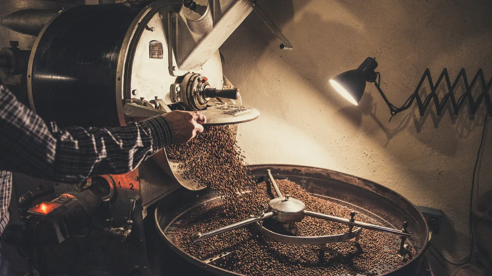
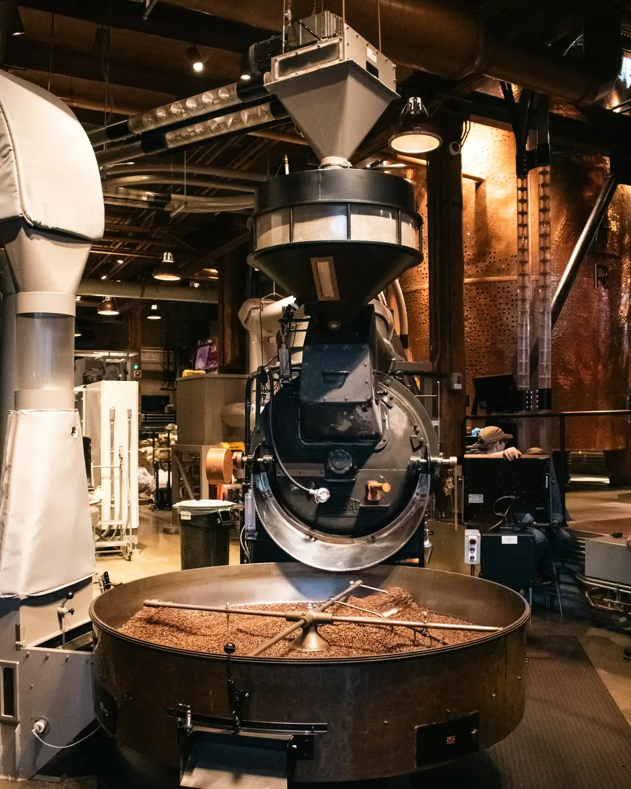
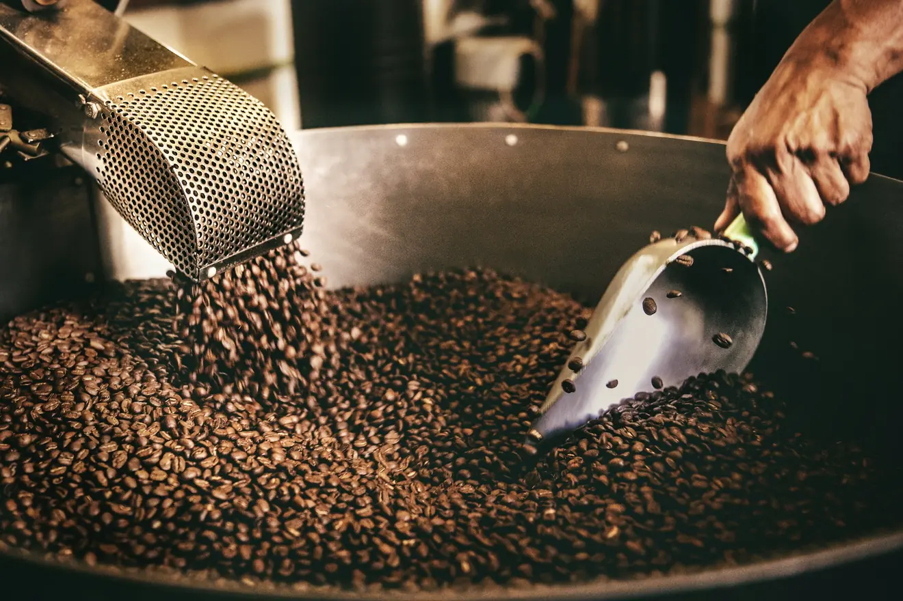
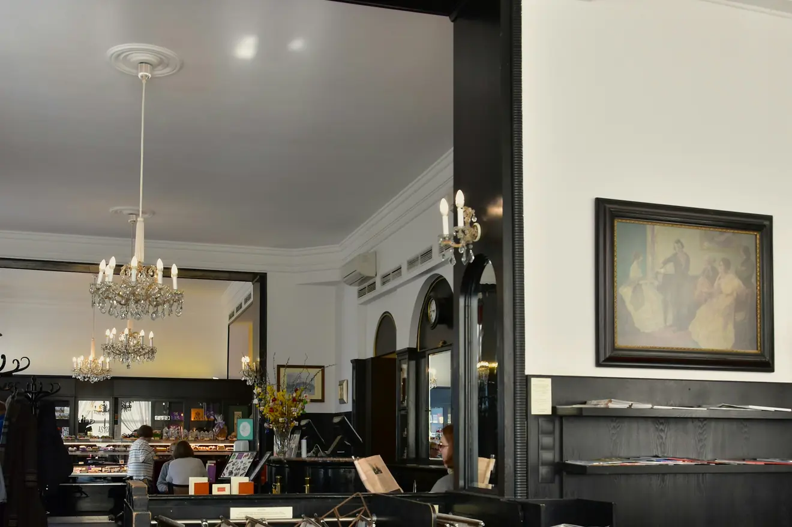
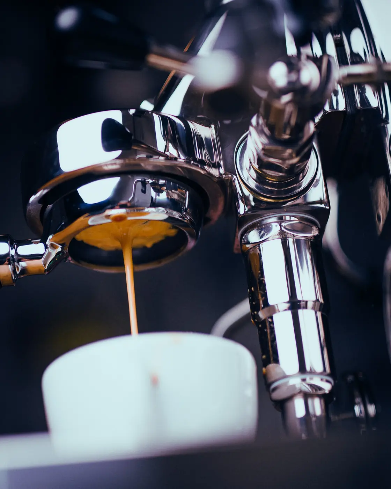

Braunschweig · seit 2016
Wir rösten in kleinen Mengen.
Zwölf Kilo pro Charge, einmal die Woche, hundert Meter von der Theke entfernt. Wer wissen will, wie sein Kaffee schmeckt, bevor er ihn kauft, kommt samstags vorbei.

Handwerk
Eine Trommel, ein Protokoll, keine Abkürzung.
Große Röstereien arbeiten mit Heißluft und schaffen eine Tonne in der Stunde. Wir arbeiten mit einer Trommel und schaffen zwölf Kilo in achtzehn Minuten. Der Unterschied ist nicht die Menge, sondern was man dabei noch mitbekommt: das erste Knacken, den Geruchswechsel, den Moment zum Abbrechen.
Jede Charge wird protokolliert — Temperaturverlauf, Dauer, Abbruchpunkt. Deshalb schmeckt der Kaffee im März so wie im Oktober.

Minute 14kurz vor dem ersten Knacken

Kühlsiebvier Minuten, dann ruhen
Röstprofil
Achtzehn Minuten, aufgezeichnet.
So sieht eine Röstung aus, wenn man sie aufzeichnet. Die Kurve unten entsteht beim Scrollen — sie zeigt den Temperaturverlauf einer Charge vom Einfüllen bis zum Abbruch.
Aufgezeichnet am 3. September 2026 — Charge Hafenkante, zwölf Kilo, Abbruch bei 214 Grad.
03 — Vom Strauch in die Tasse
Sechs Stationen.
04 — Im Regal
Vier Kaffees.
Die Rösterei in Zahlen
- Kilo je Charge
- 12
- Minuten Röstzeit
- 18
- Herkünfte im Jahr
- 9
Gastraum
Die Rösterei ist auch ein Raum.
Zehn Tische, eine Theke, der Röster hinter Glas. Wer will, sieht beim Rösten zu; wer nicht will, sitzt weit genug weg.

Langer Tischfür alle, die allein kommen

Thekezwei Mühlen, ein Siebträger
Ich komme seit vier Jahren samstags her. Nicht wegen des Kaffees allein, sondern weil hier jemand erklärt, warum er so schmeckt.